移动安全 | 安卓测试环境搭建
原创声明：转载本文请标注出处和作者，望尊重作者劳动成果！感谢！
前言：这里推荐两个测试环境，分别是lineageOS和Kali Nethunter。lineageOS支持开启adb root权限进行frida调试，通过这个特性能绕过大部分root检测。Kali Nethunter通过magisk获取root权限，满足日常的APP测试学习之外，还能进行近源渗透测试攻击。
一、lineageOS搭建
测试机型：Pixel 2 (walleye)
1.1 刷入TWRP
1.1.1 TWRP下载安装
1、TWRP是一个第三方的recovery，下载地址：https://twrp.me/Devices/
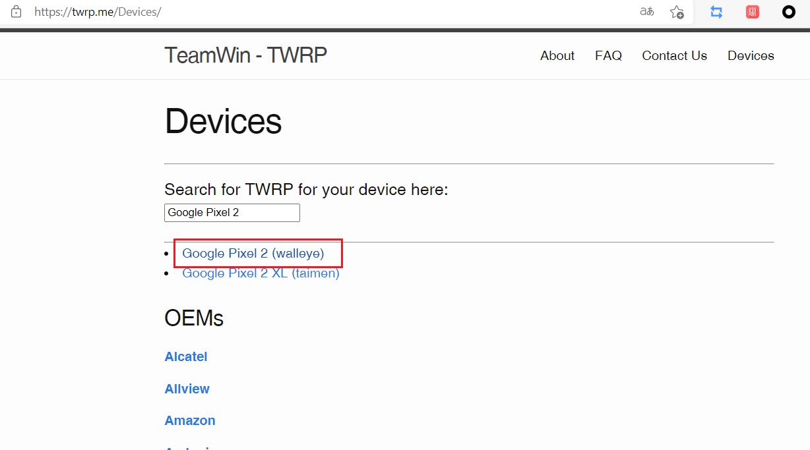
2、选择美版，然后下载最新的镜像和压缩包。
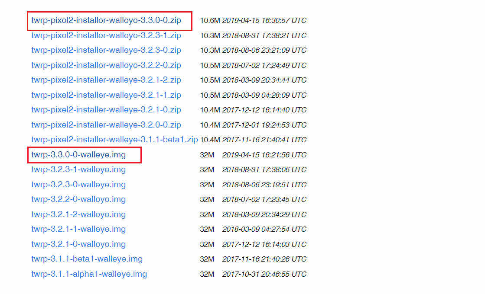
1.1.2 刷入临时TWRP
1、解锁 Bootloader
adb devices
adb reboot bootloader
fastboot flashing unlock
fastboot reboot
2、adb传入镜像
adb push .\twrp-pixel2-installer-walleye-3.3.0-0.zip /data/local/tmp
3、启动TWRP镜像
adb reboot bootloader
fastboot boot twrp-3.3.0-0-walleye.img
1.1.3 安装TWRP
进入后解锁 —> 滑块往右滑动 —> install —> 进入/data/local/tmp —> 选择 twrp-pixel2-installer-walleye-3.3.0-0.zip 包安装。
1.2 刷入lineageOS
1.2.1 下载刷机包
地址：https://download.lineageos.org/walleye
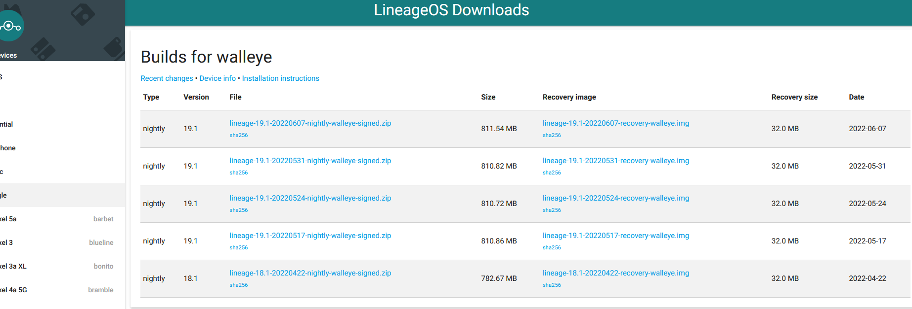
1.2.2 ADB Sideload 模式刷机
1、切换到 TWRP 的 ADB Sideload 模式，adb sideload 【你下载的压缩包】
2、等待成功后重启就完事了。
二、Kali Nethunter
前言：安装这个有啥用？简单来说就是可以在你的手机平台上运行KALI Linux系统，实际用处，懂得都懂。在综合考虑的情况下，入手了一台Oneplus6，因此下面的刷入流程是以Oneplus6为参考标准。官方推荐刷入机型：https://www.kali.org/get-kali/#kali-mobile
2.1 刷机准备
- 我整理好了刷机工具，下载并分别解压好，如下图所示：
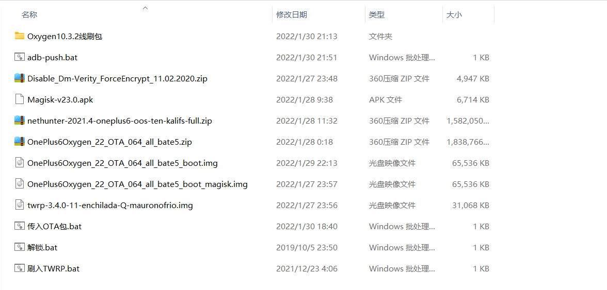
- 刷机工具下载地址：
https://www.aliyundrive.com/s/KptykyqdNmP
2.2 刷机过程
2.2.1 线刷Oxygen10.3.2
1、安装好9008驱动。
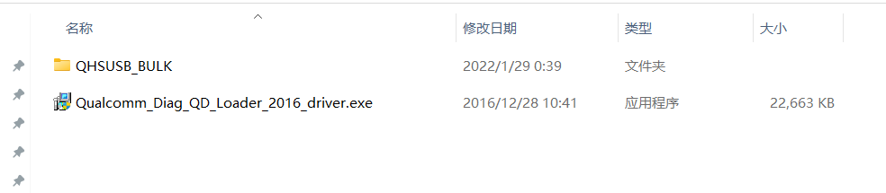
2、安装成功后，打开“MsmDownloadTool V4.0.exe”会显示如下数据：
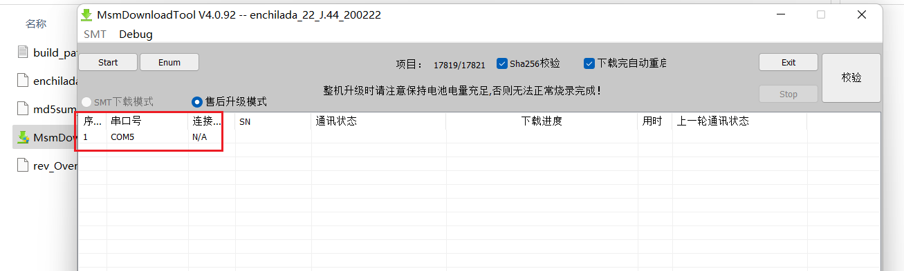
3、手机拔出数据线后，彻底关机（长按关机键不放，直到熄屏）。
4、按着音量上键不放，同时插入数据线到电脑。软件会自动识别，当显示“已连接”后，点击“start”，开始刷机。
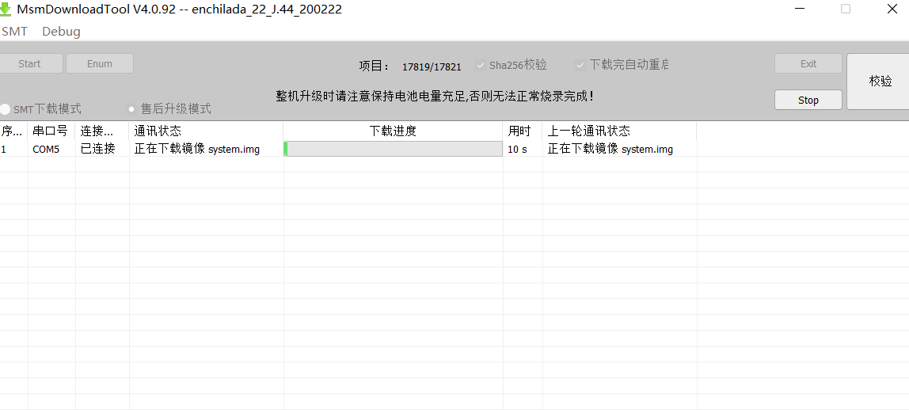
5、线刷完成后，手机自动重启进去新系统。
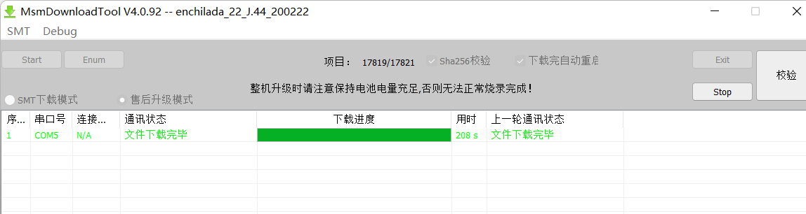
2.2.2 解锁OEM
1、进去系统后，不用配置任何东西，一路跳过。（不要插SIM卡！不要联网！不要设置指纹密码 ！）
2、进入到“关于手机”，一直点击“版本号”直到开启“开发者模式”。
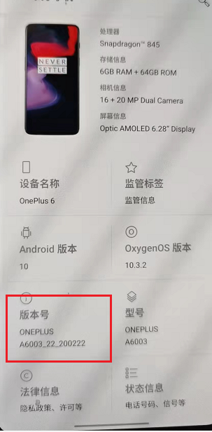
3、打开“开发者选项”，开启“OEM解锁”和“USB调试”。
4、手机通过数据线连接电脑，勾选“信任设备”，接着运行“解锁.bat”。
手机重启后将会进入下面界面，通过音量键选择第二个选项，点击电源键来确认。
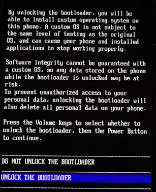
5、手机重启之后和之前一样，不用配置任何东西，一路跳过。（不要插SIM卡！不要联网！不要设置指纹密码 ！）
2.2.3 刷入TWRP
1、打开“开发者选项”，开启“USB调试”。手机通过数据线连接电脑，勾选“信任设备”，刷入TWRP：fastboot flash boot .\twrp-3.7.0_11-0-enchilada.img
2、手机将重启进入如下页面。
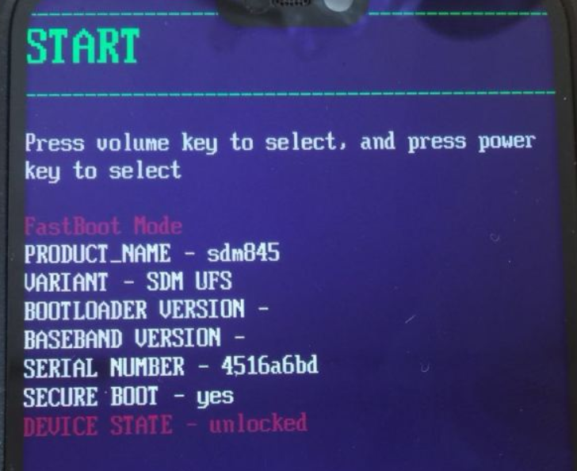
3、通过音量键选择“Recovery mode”模式，电源键确定，手机会重启进入临时TWRP。
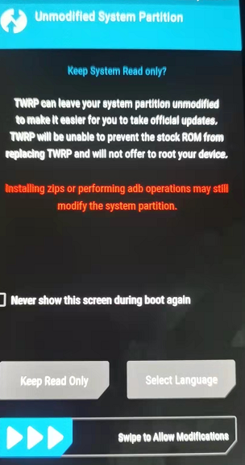
4、滑动进去主页面，选择“Wipe”，然后滑动进行“双清”，完成后返回再进行“格式化Data”。
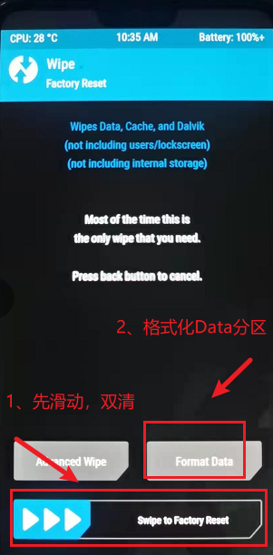
2.2.4 刷入新系统
1、格式化操作完成后，回退到主页面。
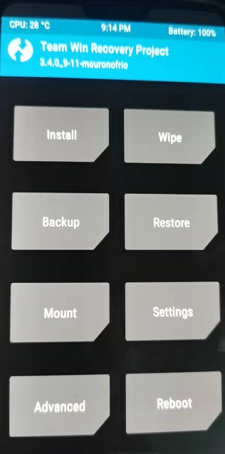
2、传入OTA包：adb push OnePlus6Oxygen_22_OTA_064_all_bate5.zip /sdcard，等待完成后，进入“Install”，可以看到我们传入的刷机包。
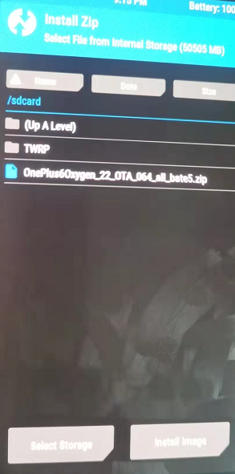
3、点击刷机包，直接滑动确认刷入。
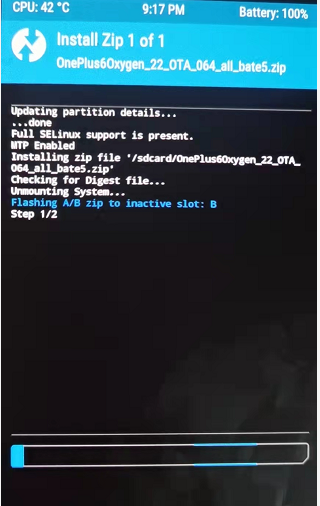
4、等到刷机完成后，点击“reboot”选择“B”分区之后重启进去新系统。
5、进入系统后和之前一样，不用配置任何东西，一路跳过。（不要插SIM卡！不要联网！不要设置指纹密码 ！）
6、打开“开发者选项”，开启“USB调试”。手机通过数据线连接电脑，勾选“信任设备”，运行 “刷入TWRP.bat”，和上面的操作一样，进去TWRP页面。
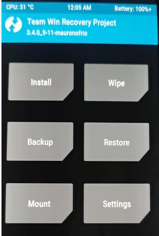
2.2.5 解密Data和刷入Magisk
1、根据官方文档，需要刷入“Disable_Dm-Verity_ForceEncrypt_11.02.2020.zip”文件。
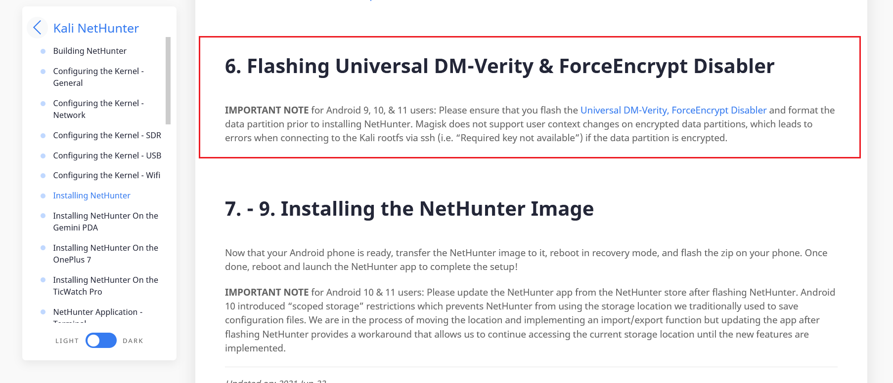
2、运行“adb-push.bat”，会将所需安装包全部拷贝到“/sdcard”目录下。进入“Install”后可以看到这些文件。
adb push Disable_Dm-Verity_ForceEncrypt_11.02.2020.zip /sdcard
adb push OnePlus6Oxygen_22_OTA_064_all_bate5_boot_magisk.img /sdcard
adb push Magisk-v23.0.apk /sdcard
adb push nethunter-2021.4-oneplus6-oos-ten-kalifs-full.zip /sdcard
3、先点击“Disable_Dm-Verity_ForceEncrypt_11.02.2020.zip”，滑动刷入。
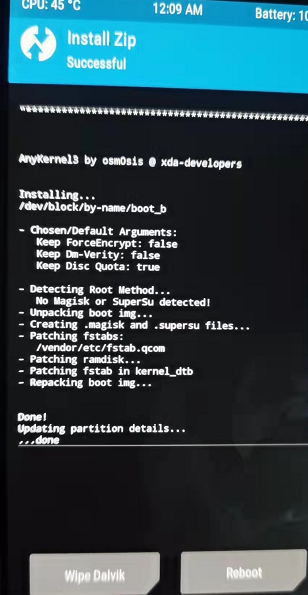
4、接着点击“Install Images”切换，选择“OnePlus6Oxygen_22_OTA_064_all_bate5_boot_magisk.img”镜像，刷入到“boot”分区。
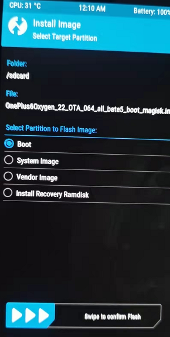
5、重启手机进入系统，手动安装“Magisk-v23.0.apk”。查看是否获取了root权限，并重启一次手机。（如果重启卡REC，就再刷一次Magisk的boot）
2.2.6 刷入Nethunter
1、数据线连接电脑，运行 “刷入TWRP.bat”，选择“Recovery mode”进去TWRP。再“Install”中刷入“nethunter-2021.4-oneplus6-oos-ten-kalifs-full.zip”。
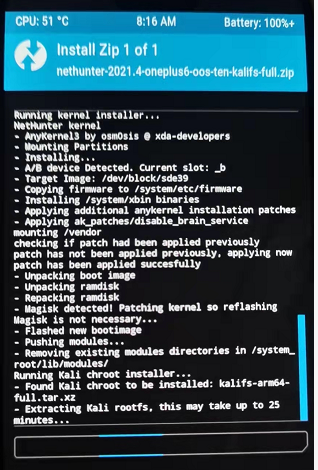
2、完成之后重启进入系统。（如果卡LOGO，或者卡TWRP，就重新刷一下Magisk的boot）
3、进入系统后会发现，除了Magisk之外多了其他四个APP。
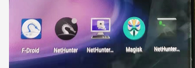
2.2.7 安装Kali Chroot
打开NetHunter App并允许所有申请的权限。在App进入主界面后，打开App侧边栏，选择Kali Chroot
Manager就会自动安装上Kali Chroot。在安装完毕后，单击STARTKALI CHROOT启动Chroot。
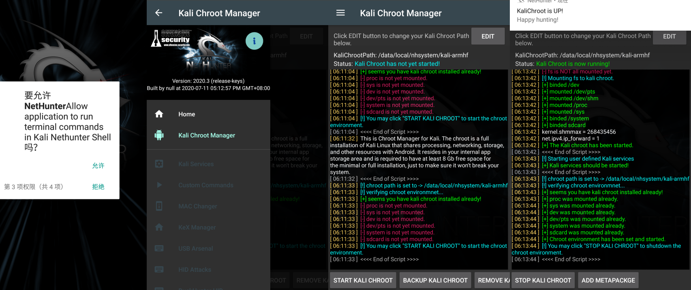
2.2.8 开启SSH
打开“Kali Services”，开启SSH服务，并勾选“RunOnChrootStart”，在Home页面是可以看到自己手机的IP的，用工具连接管理。
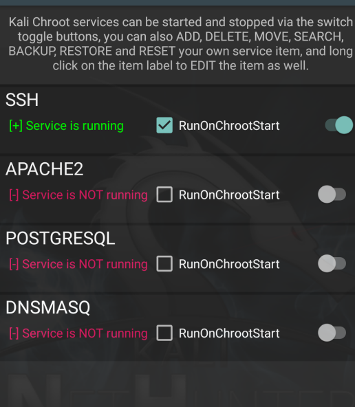
2.2.9 开启KALI桌面
1、进入“NetHunter”，选择“Kex Manager”：
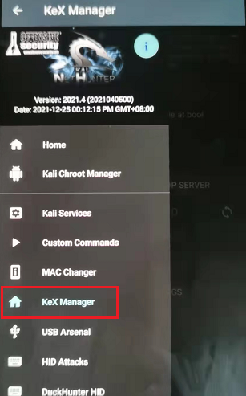
2、配置VNC密码：
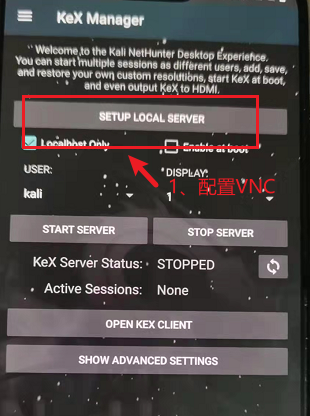
3、然后点击“START SERVER”
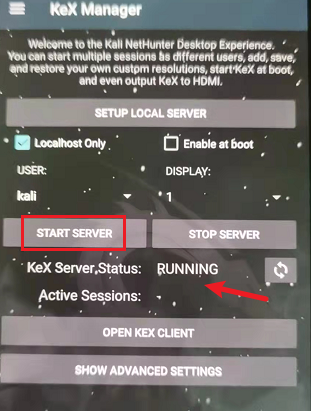
4、打开“NetHunter Kex”，填写配置信息，点击“Connect”：
5、进入KALI 桌面：
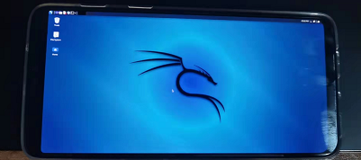
6、对于刚接触刷机的小白来说，刷入Kali Nethunter还是比较困难的。因为网上的教程或多或少，要么就是有些细节问题没有交代清楚，要么是刷机资源找不到就放弃了。毕竟安卓机型种类相对复杂，官方对内核的支持也不是很好，很多情况下还需要根据自己手机的情况，重新刷入内核。不过只要你手上有一台Oneplus6，即使是小白，按照上面的流程刷入，也不会有啥问题。